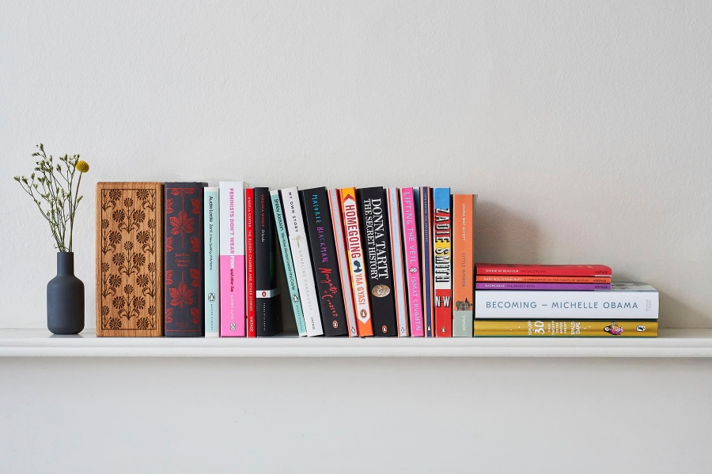
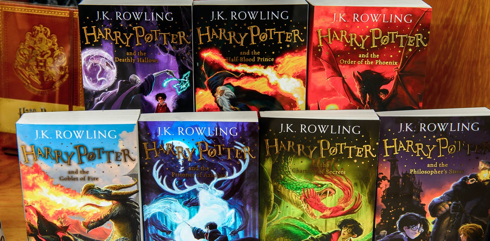
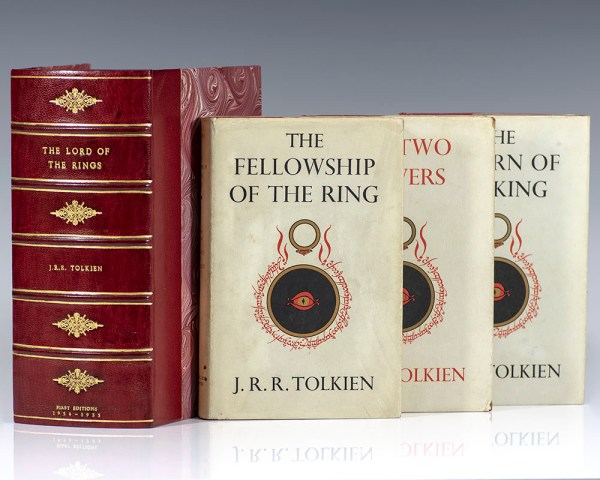
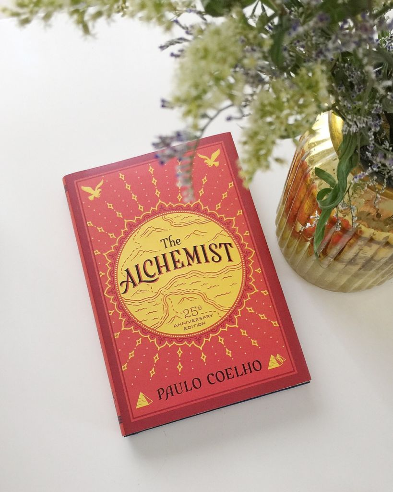
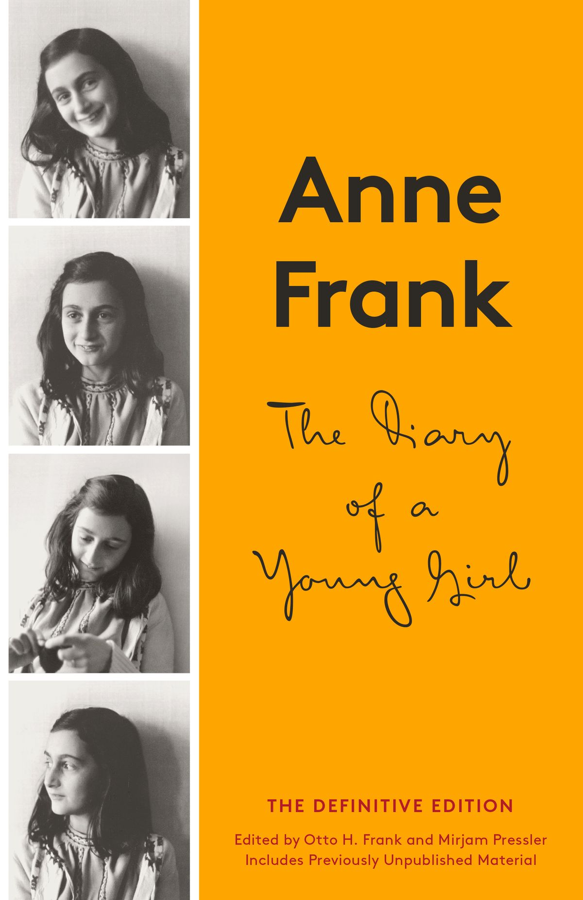
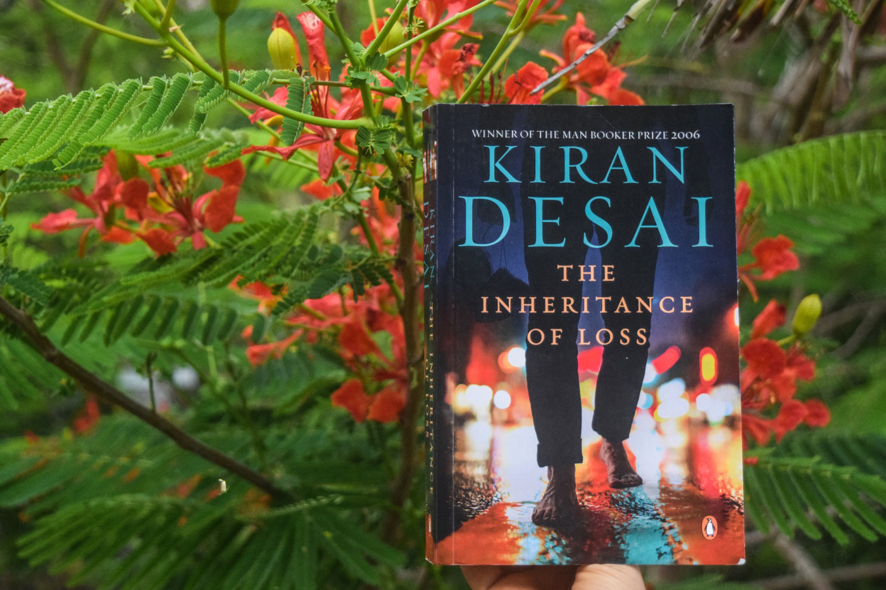

Top 5 most read books in the world are:


Harry Potter is a series of seven fantasy novels written by British author J. K. Rowling. The novels chronicle the lives of a young wizard, Harry Potter, and his friends Hermione Granger and Ron Weasley, all of whom are students at Hogwarts School of Witchcraft and Wizardry.

The Lord of the Rings is an epic high fantasy novel by the English author and scholar J. R. R. Tolkien. Set in Middle-earth, the world at some distant time in the past, the story began as a sequel to Tolkien's 1937 children's book The Hobbit, but eventually developed into a much larger work.

The Alchemist follows the journey of an Andalusian shepherd boy named Santiago. Believing a recurring dream to be prophetic, he asks a Gypsy fortune teller in the nearby town about its meaning. The woman interprets the dream as a prophecy telling the boy that he will discover a treasure at the Egyptian pyramids.

The Diary of a Young Girl, also known as The Diary of Anne Frank, is a book of the writings from the Dutch-language diary kept by Anne Frank while she was in hiding for two years with her family during the Nazi occupation of the Netherlands.

The story centres around the lives of Biju and Sai. Biju is an Indian living in the United States illegally, son of a cook who works for Sai's grandfather. Sai is an orphan living in mountainous Kalimpong with her maternal grandfather, Jemubhai Patel; the cook; and a dog named Mutt. Her mother was a Gujarati and her father a Zoroastrian orphan himself. Author Desai alternates the narration between these two points of view. The action of the novel takes place in 1986.
Acknowledgement

In the present world of competition, there is a race for existence in which those who are having will to come forward will succeed. Project is like a bridge between theoritical and practical working.
I feel obligded to thank my teacher Sir Navin Anthony for giving me this wonderful and highly informative project. Secondly, I would like to thank my parents for their encouragements for making this project a wonderful and a beautiful one. Last but not the least, I would like to thank my friends for their support throughout the project. I have no other words left to express my gratitude towards them but I am full of favours from each person.